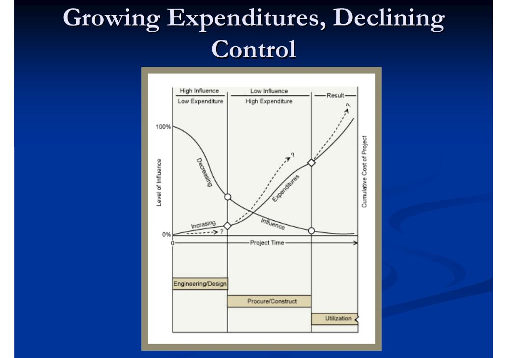
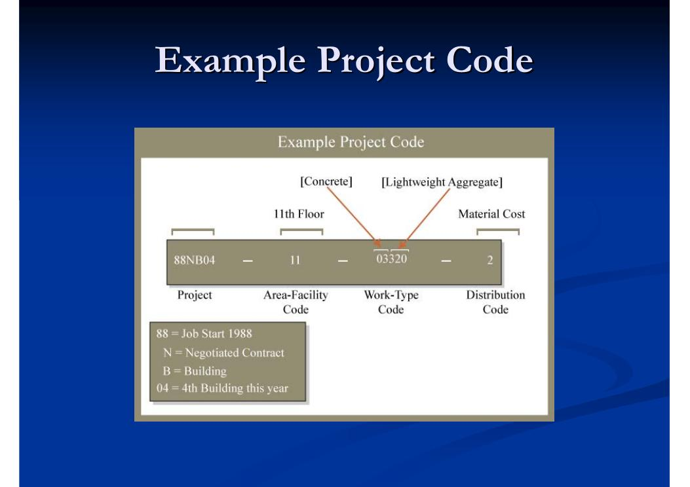
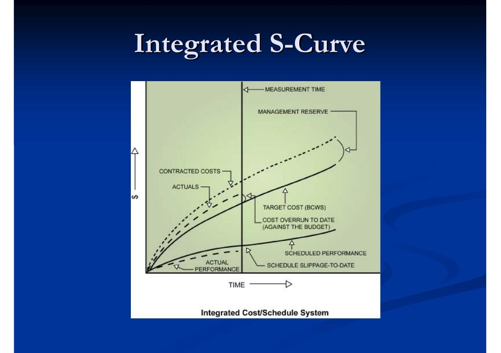
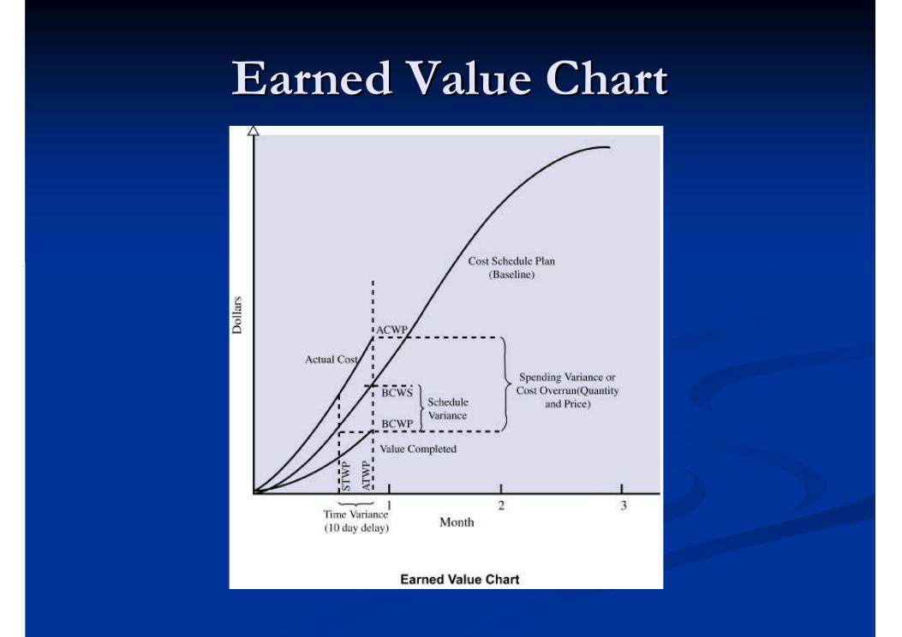
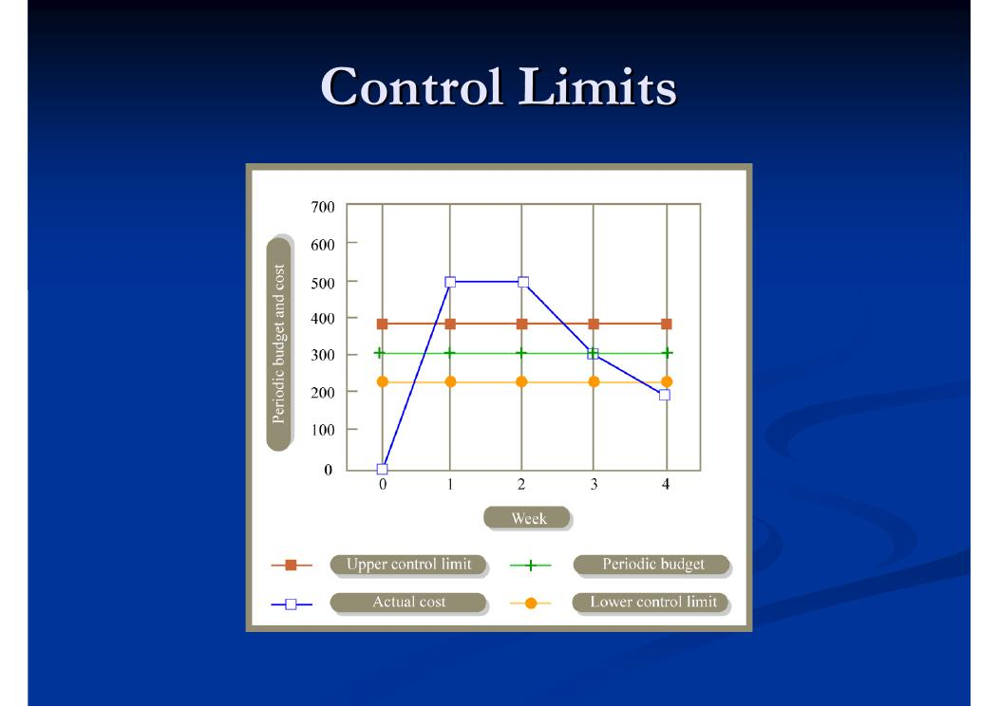
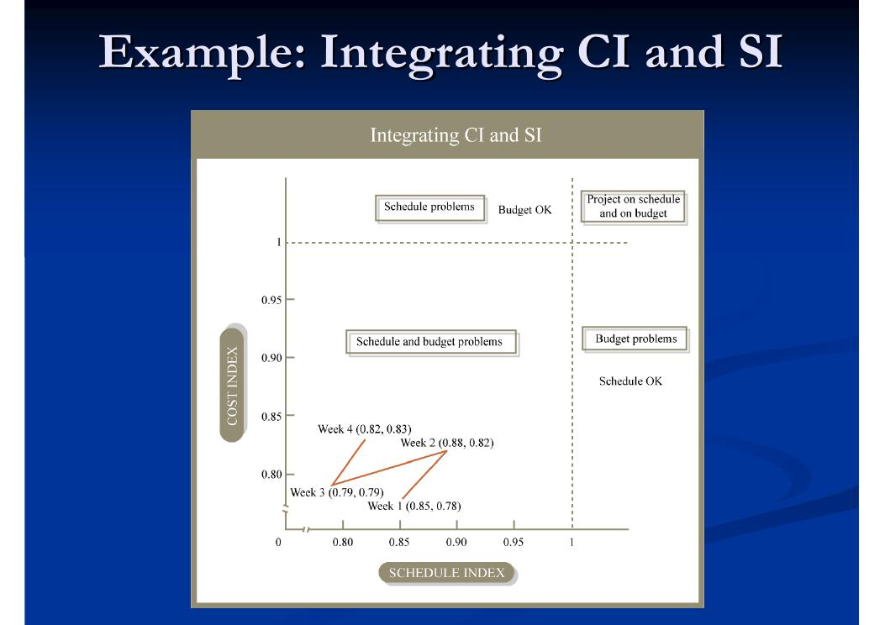

Überwachung und Steuerung als Regelkreis
Projektüberwachung (Monitoring) und Projektsteuerung (Control) bilden zusammen ein Rückkopplungssystem, dessen Ziel es ist, Abweichungen vom Soll zu erkennen und zu korrigieren – bei Budget, Terminen und Qualität. Die Erkennung ist Aufgabe der Überwachung, die Korrektur Aufgabe der Steuerung. Die Steuerung ist dabei deutlich schwieriger als die Überwachung: Idealerweise bringt sie die Projektleistung wieder mit den Plänen in Einklang – in der Praxis werden allerdings häufig eher die Pläne an die tatsächliche Leistung angepasst.
- Projektüberwachung (Project Monitoring)
- Die Gesamtheit der Verfahren und Managementpraktiken, mit denen Informationen über die erreichte oder prognostizierte Leistung eines Projekts und der ausführenden Organisation gesammelt werden – auf Basis eines Satzes von Leistungskennzahlen.
- Leistungsanalyse (Performance Analysis)
- Der Prozess, aus überwachter oder prognostizierter Leistung die Leistungsabweichungen (Varianzen) zu bestimmen.
- Projektsteuerung (Project Control)
- Der Zweck der Projektsteuerung ist es, das Projekt so anzupassen, dass es seine Ziele erreicht: Die Leistung wird bewertet, die Ursachen von Leistungsproblemen werden analysiert, Änderungen zur Behebung der Probleme werden entworfen und über Steuerungsmaßnahmen umgesetzt. Von der Projektplanung unterscheidet sich die Steuerung in zwei Punkten: (1) Sie liefert eine Menge von Entwürfen, Entscheidungen und Maßnahmen, während die Planung einen einzelnen Entwurf liefert. (2) Sie ist ein Echtzeitprozess während der Ausführung – nicht davor.
Ein Regelkreis ist unverzichtbar, weil vollkommen statische Planung eine (nützliche!) Fiktion ist. Viele Faktoren machen Abweichungen zum Normalfall:
- Physische Einflüsse: Wetter, abweichende Baugrundverhältnisse usw.
- Verfrühte oder verspätete Lieferung beschaffter Komponenten
- Änderungen der Anforderungen des Bauherrn
- Produktivitätsunterschiede gegenüber den Annahmen
- Widerstand aus der Nachbarschaft, Bedenken wegen angrenzender Gebäude
- Fehler in der Planung selbst
Selbst innerhalb vorhandener Pufferzeiten bestehen Ressourcenrestriktionen. Hinzu kommt: Die Arbeitsmoral hängt oft von guter Planung ab.

Eine Befragung von Projektleitern zeigt, welche Herausforderungen bei Überwachung und Steuerung als am drängendsten wahrgenommen werden:
| Rang | Herausforderung | Nennungshäufigkeit |
|---|---|---|
| 1 | Umgang mit endtermingetriebenen Terminplänen | 85 % |
| 2 | Umgang mit Ressourcenknappheit | 83 % |
| 3 | Wirksame Kommunikation zwischen Arbeitsgruppen | 80 % |
| 4 | Verbindliches Engagement der Teammitglieder gewinnen | 74 % |
| 5 | Messbare Meilensteine festlegen | 70 % |
| 6 | Umgang mit Änderungen | 60 % |
| 7 | Einigung über den Projektplan mit dem Team | 57 % |
| 8 | Verbindliches Engagement des Managements gewinnen | 45 % |
| 9 | Umgang mit Konflikten | 42 % |
| 10 | Führung von Lieferanten und Nachunternehmern | 38 % |
| 11 | Sonstige Herausforderungen | 35 % |
Verknüpfung mit Terminplanung und Kostenschätzung
Der Terminplan liefert den Maßstab, an dem sich der Ist-Zustand messen lässt: Er sagt uns, welcher Arbeitsfortschritt und welche Ausgaben zu jedem Zeitpunkt zu erwarten sind. Ohne Terminplanung gäbe es nichts, womit sich der Fortschritt vergleichen ließe. Die Beziehung ist wechselseitig: Die Überwachung wirkt auf die Terminplanung zurück, denn der Plan muss umformuliert werden, um festgestellte Abweichungen abzubilden.
Aus der Überwachung ergeben sich Aktualisierungen des Terminplans:
- Neue Schätzungen für Kosten, Dauern und Ressourcenverfügbarkeit einzelner Vorgänge
- Neuberechnung des kritischen Wegs – was wiederum die Überwachungsprioritäten verschieben kann
Der Projektplan ist das Fundament wirksamer Überwachung. Fünf Grundsätze:
- Vorausschauend planen
- Projektteammitglieder in die Planung einbeziehen
- Konkrete Aufgabenverantwortung festlegen
- Verbindliche Zusagen einholen
- Messbarkeit sicherstellen
Auch die Kostenschätzung ist Bezugsgröße der Überwachung: Sie macht die Kostenwirkung der Vorgänge verständlich (oft direkt in den Terminplan integriert) und dient häufig als Grundlage des Anfangsbudgets. Zwei typische Probleme dabei: Die Schätzung hat oft eine andere Detailtiefe als die Überwachung, und sie ist häufig auf die Berichterstattung nach außen ausgerichtet statt auf die interne Steuerung.
Fortschritt messen: Meilensteine und Messbarkeit
Zu einer wirksamen Überwachung gehören mehrere Bausteine:
- Repräsentative Leistungskennzahlen, bereits in der Planungsphase festgelegt
- Klar definierte Kosten- und Terminmeilensteine, die eindeutig abgenommen oder abgelehnt werden können
- Ein Berichtsrhythmus – gegebenenfalls mit variablen Intervallen je nach finanzieller Bedeutung, Kritikalität, Arbeitstempo und Schwierigkeit des Vorgangs
- Eine Managementstruktur, die auf ehrliche und genaue Leistungserfassung ausgelegt ist
- Einbindung verantwortlicher und sachkundiger Personen in das Berichtswesen
- Projektreviews (Walkthroughs und Inspektionen) sowie Projektaudits
Traditionell wird „Fortschritt“ über den Ressourcenverbrauch gemessen: aufgewendete Zeit und ausgegebenes Geld. Das Problem: Verbrauchte Inputs sagen nichts darüber aus, wie viel Ergebnis tatsächlich entstanden ist. Die wirksamsten Fortschrittsmessungen setzen deshalb nicht an den Projekt-Inputs (Geld, Arbeit, Zeit), sondern an den Projekt-Outputs an – dem Fortschritt in Richtung Fertigstellung. Inputs sind leicht zu messen; um Outputs messbar zu machen, sollte man:
- Vorgänge nach Möglichkeit in Stufen unterteilen,
- eindeutige Meilensteine definieren,
- Kosten, Arbeit und Zeit je Vorgang getrennt erfassen.
- Gut definierter Meilenstein
- Ein klar abgegrenztes Ereignis mit überprüfbaren Parametern für jedes Lieferobjekt, einem eindeutigen Bezug zum Projektmanagementplan und einer klar benannten verantwortlichen Organisation oder Person.
Für die Fortschrittsmessung innerhalb eines Vorgangs gibt es mehrere Verfahren (absteigend nach Objektivität):
- Fertiggestellte Einheiten: aufgabenspezifische Mengen, z. B. Meter verlegter Bewehrungsstahl, Anzahl gesetzter Stützen, Kubikmeter Erdaushub, montierte Paneele, Quadratmeter Trockenbau, Meter installierter Rohrleitungen
- Inkrementelle Teilmeilensteine: jeder steht für einen vereinbarten Anteil der Arbeit; bei parallelen Teilaufgaben ggf. gewichtet
- Subjektive Einschätzung des Poliers bzw. Vorarbeiters
- Binär Start/Ende: Vorgang gilt erst mit Abschluss als fertig
- Input-Maß: angefallene Kosten im Verhältnis zu den geschätzten Gesamtkosten
Kostenkontenrahmen und Datenerfassung
Ein Schlüsselelement ist die Verknüpfung von Vorgängen und Kostenkonten. Die Granularität der Erfassung ist kritisch – sie begrenzt, was sich aus den Daten später noch herauslesen lässt. Zwischen Kostenkategorien und Vorgängen besteht eine n:m-Beziehung; die traditionelle Betriebsbuchhaltung kennt dagegen nur einen Kostencode mit der Art des belasteten Postens. Abhilfe schaffen detailliertere Kostencodes (mit Vorgangsbezug) oder die anteilige Umlage mehrdeutiger Kosten anhand eindeutig zurechenbarer Kosten.
Bei der Wahl der Kostengranularität gibt es einen Zielkonflikt:
| Feinere Gliederung | Gröbere Gliederung |
|---|---|
| Erhält die Option späterer Detailanalysen; erlaubt schnellere Reaktion auf Abweichungen und schnellere Prüfung, ob Steuerungsmaßnahmen wirken | Weniger Aufwand für das Personal, schnellere Erfassung, geringere Wahrscheinlichkeit von Fehlern und Regelverstößen |
Die Datenerfassung läuft in der Praxis oft so: Poliere vermerken den Fortschritt auf Stundenzetteln (implizit: die Kolonne; Kostenkategorie des Postens; mit etwas Glück auch die Quadratmeter für die Fortschrittsschätzung). Ein Lohnbuchhalter erfasst die Stundenzettel im Büro. Für wichtige Vorgänge kann zusätzliche Aufmerksamkeit des Managements eingesetzt werden.
- Kostenstrukturplan (Cost Breakdown Structure)
- Die kanonische Art, Kosten im Projekt zu verbuchen: Er ordnet den verschiedenen Ausgabenarten Konten zu, sollte die Verfolgung der Ausgaben je Vorgang (Arbeitspaket) erlauben und enthält oft eine Gliederung auf Basis des Projektstrukturplans (Work Breakdown Structure, WBS), z. B. nach dem US-Standard CSI Masterformat.
- Betriebsbuchhaltung vs. Finanzbuchhaltung
- Die Betriebsbuchhaltung („Kostenrechnung“, Managerial Accounting) berichtet an das Management für strategische Planung und operative Nutzung. Die Finanzbuchhaltung richtet sich an Außenstehende (Eigentümer, Finanzbehörden, Aufsicht), arbeitet mit Hauptbuch und doppelter Buchführung, liefert die vertrauten Gewinn- und Verlustrechnungen und Bilanzen – und enthält viele „Buchhaltungsfiktionen“, um Zahlungsströme systematisch abzubilden.
Der Kostencode spiegelt die Kostenhierarchie und kombiniert üblicherweise standardisierte und projektspezifische Bestandteile:
- Projektnummer (enthält oft nützliche Informationen, die Nachschlagen erspart; bei internen Referenzen häufig weggelassen)
- Bereichs-/Gebäudecode (bei geografisch verteilten Projekten oder projektspezifischen Gebäudebereichen)
- Arbeitsarten-Code: WBS-basiert; kann ein Standardcode wie CSI Masterformat sein, wenn projektübergreifend einheitlich
- Verteilungscode: Kostenart der Arbeit (z. B. Material, Geräte, Lohn, Nachunternehmer)

Ein illustrativer Ausschnitt aus einem Projektkontenrahmen für den Hochbau zeigt die hierarchische Gliederung:
| Konto | Bezeichnung |
|---|---|
| 201 | Baufeldräumung und Baustelleneinrichtung |
| 202 | Gründung/Unterbau (202.1 Aushub und Verbau, 202.2 Pfahlgründung, 202.3 Betonarbeiten mit 202.31 Mischen und Einbringen, 202.32 Schalung, 202.33 Bewehrung) |
| 203 | Außenanlagen-Leitungen (Wasser, Gas, Abwasser usw.) |
| 204 | Tragwerk/Ausbau (u. a. 204.2 Stahlbau, 204.4 Fassaden, 204.6 Innenausbau mit Unterkonten 204.61–204.69, 204.7 Haustechnik mit 204.71 Elektro, 204.72 Heizung/Lüftung, 204.73 Sanitär, 204.74 Klima, 204.75 Brandmelde-/Telefon-/Sicherheitstechnik) |
| 205 | Beläge, Bordsteine, Gehwege |
| 206 | Fest installierte Ausstattung (Aufzüge, Drehtüren, Postrutschen usw.) |
| 207 | Einfriedung |
Berichtswesen
Berichte kommen oft verzögert – dabei ist die Minimierung der Verzögerung entscheidend für die Wirksamkeit des Regelkreises. Verbreitet ist selektives Berichten: Es wird nur über problematische Positionen berichtet. Häufigere Berichte empfehlen sich für Vorgänge, die wichtig (z. B. kostenintensiv), unsicher (unvertraute Verfahren), kritisch oder umfangsrelevant sind.
Zwei typische Berichtsformate aus der Praxis: Der Job Status Report stellt für jede Kostenart Budget, geschätzte Gesamtkosten, gebundene Kosten (Cost Committed), Kostenrisiko (Cost Exposure), bisher angefallene Kosten und Über-/Unterschreitung gegenüber. Der Cash-Flow-Statusbericht zeigt Kosten, Rechnungsstellung, Verbindlichkeiten, Forderungen und Kassenlage mit Vertragswert, Einbehalten (Retention) und prognostiziertem Gewinn.

Für die explorative Auswertung („Exploratory Breakdown“) wird Business-Intelligence-Software mit dynamischer Aufgliederung nach Kategorien genutzt – bei Führungskräften beliebt; gängige Excel-Beispiele sind PivotTable und PivotChart.
Leistungskennzahlen
Leistungskennzahlen (Performance Metrics) werden typischerweise vor Beginn der Projektsteuerung, in Vorbereitung der Überwachung, definiert. Sie müssen sowohl den Steuerungsprozess als auch die Berichtsfunktionen der Überwachung unterstützen. Die Hauptkategorien:
| Kategorie | Gemessene Leistung | Zielgröße | Maßeinheiten |
|---|---|---|---|
| Leistungsumfang (Scope) | Geleistete Arbeitsmenge | Zu leistende Arbeitsmenge | m, m², m³, Tonnen, $ |
| Zeit | Fertigstellungstermine | Meilensteine, Endtermin | Tag, Woche, Monat |
| Geld | Kosten, Cashflow | Budget, Gewinn, Cashflow | $, Kapitalwert (NPV) |
| Qualität | Erreichte Qualität (Erscheinungsbild, Dauerhaftigkeit, Festigkeit, Eignung) | Angestrebtes Qualitätsniveau | Anzahl/Wert der Mängel, Anzahl Nachtragsanordnungen |
| Arbeitssicherheit | Tatsächliche Unfälle und Verletzungen, Verzögerungen und wirtschaftliche Schäden | Zielniveau für Unfälle und Verletzungen | Personen, $, Tag, Woche, Monat |
| Produktivität | Tatsächliche Produktivität | Geplante Produktivität | Arbeitseinheit je Arbeitskraft und Zeit |
Der Earned-Value-Ansatz: Kennzahlen und Abweichungen
Der Earned-Value-Ansatz (Fertigstellungswert-Methode) integriert Kosten, Termine und geleistete Arbeit, indem er allen drei Größen Geldwerte zuordnet. So werden Termin- und Kostenlage in derselben Einheit (Geld) vergleichbar. Die Grundgrößen und die daraus abgeleiteten Kennzahlen – in der Vorlesung in der klassischen C/SCSC-Notation (BCWS/BCWP/ACWP), daneben die heute gebräuchlichen Bezeichnungen PV/EV/AC:
| Kennzahl | Heutiger Name | Formel / Einheit | Bedeutung |
|---|---|---|---|
| BCWS – Budgeted Cost of Work Scheduled | PV (Planned Value, Planwert) | $ | Der Wert der Arbeit, die in einem gegebenen Zeitraum planmäßig zu leisten war. |
| BCWP – Budgeted Cost of Work Performed | EV (Earned Value, Fertigstellungswert) | $ | Der (zu Budgetpreisen bewertete) Geldwert der im Kontrollzeitraum tatsächlich geleisteten Arbeit. |
| ACWP – Actual Cost of Work Performed | AC (Actual Cost, Istkosten) | $ | Die Kosten, die für die geleistete Arbeit im Kontrollzeitraum tatsächlich angefallen sind. |
| STWP – Scheduled Time of Work Performed | – | Zeit | Die planmäßige Dauer für die tatsächlich geleistete Arbeit. |
| ATWP – Actual Time of Work Performed | – | Zeit | Die tatsächlich aufgewendete Zeit für die geleistete Arbeit. |
| CV – Cost Variance (Kostenabweichung) | CV | CV = BCWP − ACWP | „Gebe ich für die geleistete Arbeit mehr oder weniger aus als geplant?“ + = Unterschreitung, − = Überschreitung, 0 = im Budget. |
| CI – Cost Index | CPI (Cost Performance Index) | CI = BCWP / ACWP | > 1 Unterschreitung, < 1 Überschreitung, = 1 im Budget. |
| SV – Schedule Variance (Terminabweichung) | SV | SV = BCWP − BCWS | „Wie verhält sich der Wert der geleisteten Arbeit zum Wert der geplanten Arbeit?“ + = voraus, − = im Rückstand, 0 = im Plan. In $ gemessen – als Näherung für den Wert. |
| SI – Schedule Index | SPI (Schedule Performance Index) | SI = BCWP / BCWS | > 1 voraus, < 1 im Rückstand, = 1 im Plan. |
| TV – Time Variance (Zeitabweichung) | – | TV = STWP − ATWP | „Brauche ich für die geleistete Arbeit mehr oder weniger Zeit als geplant?“ In Zeiteinheiten. + = voraus, − = Verzug. |
| TI – Time Index | – | TI = STWP / ATWP | > 1 voraus, < 1 Verzug, = 1 im Plan. |
| RV – Resource Flow Variance (Mittelabfluss-Abweichung) | – | RV = BCWS − ACWP | Vergleicht geplante mit tatsächlichen Ausgaben des Zeitraums – unabhängig von der geleisteten Arbeit. + = Unterschreitung, − = Überschreitung. |
| RI – Resource Flow Index | – | RI = BCWS / ACWP | > 1 Unterschreitung, < 1 Überschreitung, = 1 im Ziel. |
Drei Feinheiten sind wichtig:
- Die Terminabweichung SV wird in Geld gemessen: Selbst ein zeitlich geringer Vorsprung oder Rückstand kann groß ausfallen, wenn gerade an einer sehr teuren Projektkomponente gearbeitet wird.
- Die Zeitabweichung TV kann nahe null liegen, obwohl der Ressourcenverbrauch stark abweicht – sie misst nur Zeit.
- Die Mittelabfluss-Abweichung RV sagt nichts über „gut“ oder „schlecht“: Sie kann null sein, wenn schneller, aber billiger als geplant gearbeitet wird – oder langsamer, aber teurer.


Durchgerechnetes Beispiel
Das Beispiel betrachtet ein Projekt mit den Vorgängen A bis G; nach vier Wochen sind die Vorgänge A, B und E angelaufen. Die Plandaten:
| Vorgang | Dauer (Wochen) | Kosten ($) | Kosten je Woche ($) |
|---|---|---|---|
| A | 5 | 1.500 | 300 |
| B | 3 | 3.000 | 1.000 |
| E | 7 | 5.700 | 814 |
Traditionelles Berichtswesen würde nur Status und Istkosten zeigen – nach vier Wochen: A abgeschlossen (1.500 $), B abgeschlossen (3.000 $), E in Arbeit (2.900 $). Ob das gut oder schlecht ist, bleibt unklar. Das Earned-Value-Berichtswesen ergänzt Budgetkosten und Fertigstellungsgrad: A ist zu 100 % fertig (Budget: 300 × 4 = 1.200 $), B zu 100 % (3.000 $), E aber erst zu 2/7 ≈ 28,6 % (Budget: 814 × 4 = 3.256 $).
Daraus ergeben sich die Grundgrößen je Vorgang: BCWP von E ist 28,6 % des Gesamtbudgets 5.700 $ ≈ 1.628 $, während planmäßig 3.256 $ an Wert hätten entstehen sollen (BCWS) und 2.900 $ tatsächlich ausgegeben wurden (ACWP).
| Vorgang | BCWP ($) | ACWP ($) | BCWS ($) | CV = BCWP−ACWP | SV = BCWP−BCWS |
|---|---|---|---|---|---|
| A | 1.500 | 1.500 | 1.200 | 0 | +300 |
| B | 3.000 | 3.000 | 3.000 | 0 | 0 |
| E | 1.628 | 2.900 | 3.256 | −1.272 | −1.628 |
| Summe | 6.128 | 7.400 | 7.456 | −1.272 | −1.328 |
Die Indizes je Vorgang: A liegt mit SI = 1.500/1.200 = 1,25 vor dem Plan bei Punktlandung im Budget (CI = 1); B ist exakt im Plan; E ist mit SI = 1.628/3.256 = 0,5 weit zurück und mit CI = 1.628/2.900 = 0,56 deutlich zu teuer. Auf Projektebene ergibt sich:
Verfolgt man BCWS, BCWP und ACWP wochenweise, lassen sich SI und CI als Zeitreihen darstellen (Woche 1–4: SI = 0,85 / 0,88 / 0,79 / 0,82; CI = 0,78 / 0,82 / 0,79 / 0,83). Besonders anschaulich ist die gemeinsame Darstellung beider Indizes in einer Matrix:
